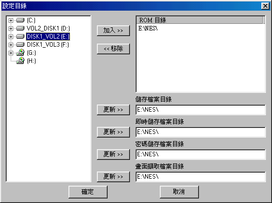
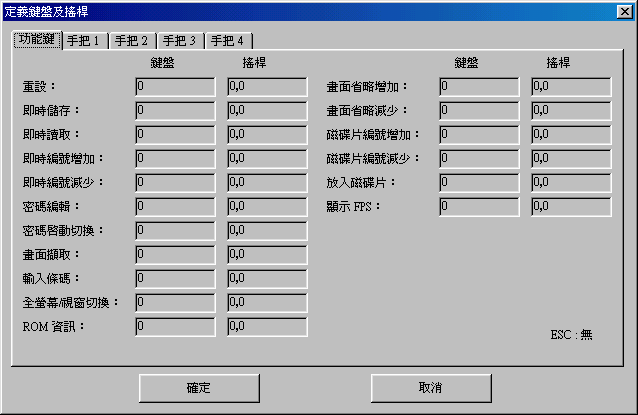
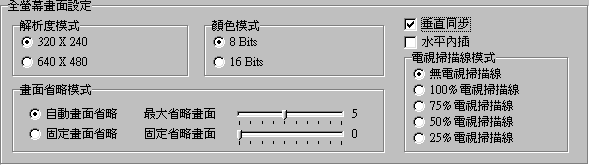
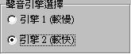
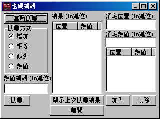

當你看到這個畫面的時候，恭喜你，設定上大致都已經完成了，現在你只需要點選名單上的遊戲，在左下角的預覽畫面將會自動秀出該遊戲的遊戲畫面，然後按兩下便可以開始遊戲了。
當你看到這個畫面的時候，恭喜你，設定上大致都已經完成了，現在你只需要點選名單上的遊戲，在左下角的預覽畫面將會自動秀出該遊戲的遊戲畫面，然後按兩下便可以開始遊戲了。SMYNES 中文說明檔 1.0 版
任天堂機器介紹：
任天堂紅白機是由日本任天堂公司在 80 年代所發表的家用遊戲平台。由於當時的遊戲業競爭被非非常強烈再加上當時有許多代表的大作出現，更使得任天堂變成 80~90 年代最活躍的家用主機。基本上任天堂紅白機的結構並不複雜，所使用的是 6502 的 CPU 在聲音方面則是兩個方波一個三角波一個雜音以及一個 PCM（兩種類），不過由於遊戲廠商對任天堂遊戲的用心以及求好，許多大廠商都有在遊戲卡帶中增加聲音的晶片，如果這些額外的聲音晶片沒有被模擬的話，那麼該遊戲將會出現缺少音色的問題，不只這樣許多任天堂遊戲在當時推出時也都有搭配專用的硬體配備，比方說是「麻將搖桿」「刷卡機」「沖氣式機車」「打地鼠搖桿」「跳跳板」「光線槍」等等數十種的周邊配備，如我這些周邊配備沒有被模擬的話，那麼該遊戲很可能將無法運作。
SMYNES 的特點：
SMYNES 主要是模擬日本原廠的最初代任天堂紅白機，而且硬體的正確度相信是非常的高了，原最最大的困難 Vbank 以及 NMI 也已經完全解開了，而聲音方面則是測試主機出來的結果所寫的，這些都不是網路上有流傳非常正確資料的部分。至於聲音方面由於是 100% 模擬日本原廠機種，所以請相信你所聽到的聲音，目前知道一些台製或者是盜版的任天堂主機都有因為節省開發成本而在聲音部分偷了料，自然聲音就沒那麼的好聽以及準確了。另外 SMYNES 裡面有內建了強大的日文原版遊戲資料庫，所以基本上只要的你遊戲是日文版的正確吸出的遊戲應該都能夠秀出該遊戲的所有資料，對大家來說應該是相當的方便吧。至於歐美版的遊戲由於目前缺乏詳細資料，所以資料庫的結構除了英文名稱以外其他的幾乎都是沒有，而遊戲支援方面，如果你的是日版遊戲而沒有秀出遊戲資料的話，那麼 90% 的可能是你的 rom 本身是有問題的錯誤 dump，當然也可能是我們漏打了幾個資料，不過這些資料庫會一直更新的。如果你非常確定該遊戲是由你自己 dump 而且確定沒有問題，那麼請跟我聯絡，我將會更新資料庫。目前我們還在尋找由正版卡帶所 dump 下的 mapper 2 『雅典娜』這是目前知道我們有錯誤的。
SMYNES 1.0 Final 所更新以及支援的地方：
SMYNES 使用說明：
（步驟一）
在你第一次執行 SMYNES.EXE 檔的時候畫面將會跳出最基本的路徑設定（圖一）已經控制按鍵設定（圖二）兩個畫面，如下圖：
| （圖一）當你看到這個畫面的時候請先在左邊視窗選擇好你所存放任天堂遊戲檔 *.nes *.nz *.fds 的遊戲路徑，然後按下最上面的『加入』這樣『ROM 目錄』就算是完成了，當然如果你有一個以上的目錄也可以多增加幾個『ROM 目錄』的路徑。SMYNES 將會自動搜尋所有該路徑下的任天堂遊戲檔（包含子目錄）。至於下面的其他路徑也請大家參照 ROM 目錄的路徑設定方式設定，這樣將會使你的 SMYNES 在最佳的情況下執行。 |
| （圖二）這裡將是非常重要的設定畫面，如果沒有將所有的功能鍵都設定的話那麼該功能鍵將不會發生功能，因為
SMYNES
並沒有預設的使用者按鍵，我們是希望開放最大的自由度讓使用者自己來設定，所有的功能鍵都有『鍵盤』以及『搖桿』兩個地方可以設定，也就是說玩家並不一定只能把功能鍵設釘在鍵盤上，一些常用的功能鍵如『密碼啟動切換』也都能夠設定在搖桿上面（只要你高興，沒什麼不可以），至於『手把1』也請一定要設定，不然將無法開始遊戲。 以下是所有功能鍵所代表的意思： 重設：也就是 reset，重新開始遊戲 即時存取：隨時將遊戲進度記錄下來的按鍵 即時讀取：隨時讀取遊戲進度（但需要先有『即時存取』的紀錄檔案 即時編號增加：這個按鍵可以用來選擇要即時存╱讀取哪一個記錄檔 即時編號減少：這個按鍵可以用來選擇要即時存╱讀取哪一個記錄檔 密碼編輯：SMYNES 提供大家自由搜尋遊戲中人物的資料能力，而且可以鎖定資料創造出無敵的角色來順利玩玩所有的遊戲，編輯後的密碼將會自動存檔，下次遊戲開始的時候將會自動讀取 密碼啟動切換：當你利用『密碼編輯』功能成功的鎖定住角色的一切相關資料後，只要按下這個『密碼啟動切換』鍵，那麼所有已經所訂的資料將會『暫時』失效，直到你在案下一次『密碼啟動切換』這時候才會將原來已經所訂的資料重新鎖定，非常適合用在一些動作遊戲在過關之後會將 HP （體力）歸零計分的遊戲 畫面擷取：也就是按下設定按鍵後會將遊戲畫面以資料最少而且畫面品質最好的 PNGcc 格式輸出，並且會存放在一開始所設定的路徑裡面 輸入條碼：這項功能只能用在 Mapper 16 由 Bandai （萬岱）公司所推出的 DATCH 刷卡機遊戲，當要刷入卡片角色的時候只要按下這個鍵便會跳出一個小視窗要求你輸入 7 或者是 11 的阿拉伯數字當作是刷卡動作 全螢幕╱視窗切換：只要按下此鍵將可以切換 window 視窗或者是全化面遊戲 ROM 資訊：可以秀出該遊戲的所有資料（包括檔頭以及在資料庫裡面的資料） 畫面省略增加：如果遊戲速度太慢的話，可以按此鍵將畫面省略一些，不過當畫面省略掉太多的時候將會有嚴重跳格的情況，會導致會面不順暢的情困，不過也可以利用這個功能將遊戲一些不想看的畫面以最快的方式跳過 畫面省略減少：意思和上面的「畫面省略增加」相反 磁片編號增加：當讀取 *.fds 任天堂磁碟機遊戲的時候如果需要換面的時候就必須以增加或減少磁片編號的方式 磁片編號減少：當讀取 *.fds 任天堂磁碟機遊戲的時候如果需要換面的時候就必須以增加或減少磁片編號的方式 放入磁碟片：當遊戲進行中出現換片的訊息後將磁片換好後按下此鍵就能開始讀取 顯示 FPS：非常重要的功能之一，他可以告訴你目前畫面使以每秒多少張圖的速度在執行，如我一切非常順利的話數字應該是在 60 但是因為誤差的關係通常是在 58~60 之間，數字越小的時候表示畫面將會越不順暢，大家一開始的時候可以利用這樣的功能得知應該使用何種顯示模式才能有最好的顯示狀態 |
（步驟二）
| 當你看到這個畫面的時候，恭喜你，設定上大致都已經完成了，現在你只需要點選名單上的遊戲，在左下角的預覽畫面將會自動秀出該遊戲的遊戲畫面，然後按兩下便可以開始遊戲了。 |
（步驟三-額外的設定）
| 在顯示資訊的畫面上能夠同時顯示許多的遊戲資訊，但是並不是每一個我們都需要看到，例如如我你是使用中文的 SMYNES 那麼顯示日文檔名的資訊欄位就沒有需要了，而這些資訊的欄位都是可以依照各位使用者自訂的，只要將滑鼠移動到不需要或是要改變大小的欄位上滑鼠的游標就會變成可以改變成可以左右移動的箭頭，而這些欄位設定都會自動被紀錄起來，下次開啟 SMYNES 的時候將不需要再次設定。 |
使用疑問 FAQ：
Q1：為什麼我的遊戲在 SMYNES 裡面無法秀出遊戲的資訊？
A1：最有可能是你的遊戲不是日版的遊戲，目前遊戲資訊只有儲存了日文標準
1245
個遊戲，當然也有可能是我們疏忽少打了幾個遊戲的資訊，不過另外一項可能就是你的遊戲是有問題的
dump 版本。
Q2：SMYNES 在我的電腦上執行的速度好慢，有沒有能夠改善的方法？
A2：目前 SMYNES 在 S3
系列的顯示卡會有明顯變慢的情況，這個問題我目前也不知道是什麼原因，不過你可以嘗試著到『模擬器設定』中選擇第二『NES
模擬器畫面設定』然後依照下圖做設定，然後最下面的『預設為全螢幕』的選項打勾，這樣應該會有不少的速度改進

如果還是太慢，那麼請『NES
模擬器聲音設定』然後將『聲音引擎選擇』改成『引擎2
（較快）』（如下圖）這樣速度應該會有提升，但是聲音的品質較差。

Q3：為什麼 Mapper 5, 6, 8, 17, 96, 188 這些遊戲都無法執行？
A3：目前 SMYNES 還沒有模擬 Mapper 5, 96, 188 這三個 mapper
不過下一版正式版就會有可能了，至於 Mapper 6, 8, 17 這三個 Mapper
由於都是由『正先』磁碟機所改造過的遊戲檔案，遊戲本身都已經被改過，所以
SMYNES
目前將不考慮支援這些被改過的錯誤遊戲版本。畢竟正確的遊戲檔目前在網路上都能很輕易的找得到了。
Q4：SMYNES 所提供的作弊功能要如何使用？
A4：當你在遊戲的時候只要按下你設定的『密碼編輯』按鍵便會跳出如下圖的畫面

當你第一次開始收尋的時候請先按下『重新搜尋』然後按下『離開』，繼續遊戲後當要搜尋的的資料有所改變後，那麼再一次呼叫這個編輯畫面，然後選擇資料變動的方式，如增加，減少等，當然如果你知道確切的數字也可以選擇『數值』然後鍵入數字，不過請注意數值是
16 位元計算的，所已有可能你的數值如果是大於 9
的話可能會搜尋不到，當選擇完畢後按下『搜尋』此時在中間的畫面便會出現所有搜尋到的數值，重覆以上的動作，試圖讓遊戲中要鎖定的資料一直改變，重覆搜尋後應該能夠找得到，然後當中間只剩下一組（或較少）位置的時候便可在該位置上點選兩次，此時在『鎖定位置』上面便會出現該位置，然後只要在下面的『鎖定數值』填入要鎖定的數字然後在案下『加入』便可以了，如果遊戲中想要停止鎖定的話可以按下由你自己設定的『密碼啟動切換鍵』，多用個幾次應該就能夠很容易掌握到使用的訣竅了，另外這些被搜尋到的密碼都會自動儲存下來，下次啟動遊戲的時候便會自動讀取，不需要再重新搜尋一次了。
Q5：如果說遊戲的畫面顏色我不喜歡的話是否可以更換？
A5：YES，在 SMYNES 裡面有欲設了 9
種色盤的設定，而且也包含了所有知名模擬器所使用的遊戲色盤喔，你可以自由的選擇使用任何一種色盤，當然
SMYNES 也提供了使用者兩個自訂色盤（0 號以及 1
號色盤）這兩組大家可以自由的設定，另外也可以儲存以及讀取。
Q6：為什麼遊戲畫面中有一個『DEMO』的字樣？
A6：SMYNES
是一個需要註冊付費的軟體，在你還沒有註冊付費之前你的遊戲畫面上將會有『DEMO』的自顯示出來，而且還有只能遊戲
5 分鐘的限制，如果你真的覺得 SMYNES
是一個好軟體的話，那麼請多支持，幫助我能夠完成其他更好的模擬器
:)
Q7：請問註冊費用多少？要如何註冊？註冊 SMYNES
以後是否以後所有更新後的 SMYNES 都是免費？另外如果將來 SMY
還有開發其他註冊版的 EMU 那麼是否會有提供折扣給已經註冊 SMYNES
的使用者？
A7：註冊費用為台幣 300
元整，註冊的方式目前有兩種，一種是直接寄現金的方式，另一種是轉帳的方式，這個在最下面會有告訴你如何註冊
:) 是的！只要註冊過一次 SMYNES 在以後所有 SMYNES
的所有更新版本都是免費的，如果 SMYNES
註冊的踴躍的話，那麼我當然希望開發更多更好的 EMU
到時候一定會讓會員有折扣的 :)
Q8：為什麼 SMYNES 會以註冊的方式發展？免費的不是很好嗎？
A8：SMYNES 當你測試過後如果你感覺和其他免費版本的 EMU
是沒有差別或是更差的話，那麼當然你就沒有必要使用 SMYNES
了，畢竟目前好的 NES 模擬器也很多，像是 Famtasia, Fwnes, NESten, Nesticle
等都是非常優秀的免費版模擬器，只是為了開發 SMYNES
我們已經投入了上千小時的工作時間以及 N
萬元台幣的開支（像是購買儀器測試任天堂主機，製作硬體研究卡帶等等）這些費用都非常的高，當然也因為這樣的原因，目前
SMYNES 在任天堂硬體的模擬程度初步估計已經是在 97%
正確度了（剩下一些真的是電腦無法或是非常困難調整的誤差，如賽車遊戲在轉彎時候畫面會有雜質），所以說如果你使用到
SMYNES 覺得喜歡的話，請支持我們開發其他更好的模擬器 :)
Q9：請問目前 SMY 是否有打算開發其他的模擬器？
A9：目前還沒有，畢竟在 SMYNES
裡面我已經花了太多的精神以及金錢，所以我現階段希望將 SMYNES
做得更好，這樣對已經註冊的使用者也有所交代，畢竟要做就要做最好的。
當然在 SMYNES
做得差不多的時候，如果有閒錢餘力的話，那麼我當然會開發其他的
EMU
Q10：請問網頁上提供的 Mapper 86
立棒語音檔 是用來做什麼用的？
A10：這個是『燃燒！立棒一代』的專用搭配檔案，因為燃燒立棒裡面有專門的聲音晶片，這是目前沒有模擬器有支援的，所以只要你有玩這個遊戲，再加上這個檔案，在遊戲的時候便會聽到直時由卡帶裡發出的真人錄音語音喔！請大家一定要試試看
:)
至於其他『燃燒！立棒』系列的卡帶都有用到，只是目前還沒有支援，等下一版應該會有。
Q11：磁碟機遊戲為什麼無法使用？
A11：你必須要有 DISKSYS.ROM 這個檔案，這是磁碟機的 BIOS，我無法提供給你，不過在網路上是很容易找得到的，之前
Fwnes 裡面也有使用到。
Q12：如果我還有其他問題怎麼辦？
A12：我已經請 Billy Jr.
幫我在網頁上弄一個討論區了，所以等討論區弄好後有任何問題都可以上來發表。
如何辦理註冊：
（方法一）
只要在 "order.txt" 將您的個人資料填妥並印出，連同美金十元或是新台幣三百元整寄至以下郵政信箱即可。
石明于
郵遞區號 333
桃園郵政 19-79 信箱
備註：如果你沒有列表機的話，請將所有資料手寫清楚，尤其是 E-mail 的資料請務必小心填寫，不然我們可能會找不到你，這樣的話我將無法把註冊的檔案寄給你。
（方法二）
可以利用郵局轉帳的方式，匯入新台幣三百元整或是美金十元到以下的帳戶，然後再發一封 E-mail 到 homeshih@ms14.hinet.net 記得 E-mail 中要有你轉帳的帳戶資料，以及你填寫完的 "order.txt"，我們在核對之後便會將註冊資料用 E-mail 寄給你 :)
郵局代碼：700
局號：000000-1
帳號：312759-9
戶名：石明于
立帳郵局：北區郵政管理局
特別感謝：
Billy Jr. <--- 萬惡元首.. 將我推入寫
SMYNES 的火坑
Conan 在遊戲資料上的支援
Frankkao 幫忙建立遊戲資料庫
KRTa3 在卡帶以及硬體周邊上的支援
Mr. Lee 在硬體上及技術的大力支援
Postman 在卡帶以及硬體周邊上的支援
WOOD 在資料以及技術上的支援
以及所有幫忙測試及註冊 SMYNES 的所有使用者 :)
SMY 2000/5/27